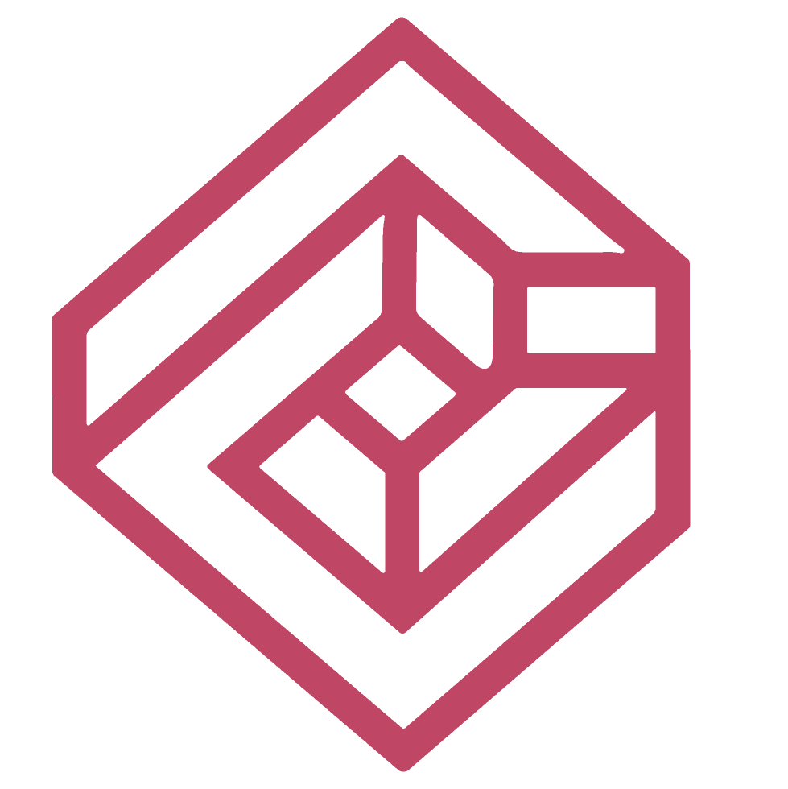

<!DOCTYPE html>
<html lang="es">
<head>
  <meta charset="UTF-8" />
  <meta name="viewport" content="width=device-width, initial-scale=1.0"/>
  <title>Visor Único</title>

  <!-- Favicon del proyecto -->
  <link rel="icon" href="../assets/img/ennde3d_icon.png" type="image/png">

  <!-- Estilos comunes y específicos -->
  <link rel="stylesheet" href="/styles/bootstrap.css"> 
  <link rel="stylesheet" href="/styles/scrollbar.css">   
  <link rel="stylesheet" href="/styles/loader.css">           
  <link rel="stylesheet" href="/styles/sidebar.css">          
  <link rel="stylesheet" href="/styles/viewer.css">      
  <link rel="stylesheet" href="https://cdn.jsdelivr.net/npm/simplebar@latest/dist/simplebar.min.css">


  <!-- Scripts principales -->
  <script type="module" src="/js/loader.js" defer></script>                      
  <script type="module" src="/js/scene/init/initFinalViewer.js" defer></script> 
  <script type="module" src="/js/ui/viewerMenus.js" defer></script>     
  <script type="module" src="/js/ui/loadHdriOptions.js" defer></script>    
  <script type="module" src="/js/utils/tooltips.js"></script>     
  <script type="module" src="/js/bootstrap.bundle.js"></script>
</head>

<!-- Proyecto desarrollado por Alberto Estepa y David Gutiérrez (DAM 2025) para ENNDE -->

<body class="bg-dark">

  <!-- LOADER DE INICIO (animación de cubo) -->
  <div id="loader-container">
    <div class="scene">
      <div class="cube-wrapper">
        <div class="cube">
          <div class="cube-faces">
            <div class="cube-face shadow"></div>
            <div class="cube-face bottom"></div>
            <div class="cube-face top"></div>
            <div class="cube-face left"></div>
            <div class="cube-face right"></div>
            <div class="cube-face back"></div>
            <div class="cube-face front"></div>
          </div>
        </div>
      </div>
    </div>
  </div>

  <!-- BOTÓN DE RETORNO A INDEX -->
  <button id="back" onclick="window.location.href = 'splitViewer.html'">
    <svg fill="#000000" xmlns="http://www.w3.org/2000/svg" viewBox="0 0 24 24"><path d="M15 18l-6-6 6-6"/></svg>
  </button>

    <!-- CONTENEDOR PRINCIPAL DEL VISOR + SIDEBAR -->
  <div id="visorWrapper" class="d-flex flex-column flex-lg-row">
    <div id="viewerContainer" class="position-relative">
      <!-- === CAMBIO: AHORA LOS BOTONES ESTÁN DENTRO DE indexViewer1 === -->
      <div id="indexViewer1" class="w-100 h-100 position-relative overflow-hidden">
        <!-- Botones para helpers -->
        <div id="helperToggles" class="helper-icons" style="display: none;">
          <button id="toggleAxes" class="btnhelper" title="Mostrar/ocultar ejes">
            
          </button>
          <button id="toggleGrid" class="btnhelper" title="Mostrar/ocultar cuadrícula">
            
          </button>
        </div>
      </div>
    </div>
    <!-- SIDEBAR CON ICONOS -->
    <aside id="sidebar" class="sidebar">
      
      <div id="toolbar" class="d-flex flex-row flex-lg-column align-items-center justify-content-start gap-5">
        <div class="ennde-logo-toolbar btnPrincipales toolbarButton">
          
        </div>

        <div class="ActionButtons d-flex flex-row flex-lg-column align-items-center justify-content-center gap-5">
          <button id="btn-changeModel" class="btnPrincipales changeModel toolbarButton" data-bs-toggle="tooltip" title="Cambia Modelo">
            
          </button>

          <button id="btn-world" class="btnPrincipales world toolbarButton" data-bs-toggle="tooltip" title="Personaliza la escena">
            
          </button>

          <button id="btn-axes" class="btnPrincipales material toolbarButton" data-bs-toggle="tooltip" title="Personaliza el modelo">
            
          </button>

          <button id="btn-material" class="btnPrincipales magnet toolbarButton" data-bs-toggle="tooltip" title="Contrólalo todo a la vez">
            
          </button>

          <button id="btn-info" class="btnPrincipales info">
            
          </button>
        </div>
      </div>


      <!-- PANEL DE MENÚS (mismo comportamiento que visor doble) -->
      <div id="menuPanel" class="menu-panel">

        <div id="menu-world" class="menu-content d-none h-100 w-100">
          <h3 class="panel-title mb-3">
            
            Environment
          </h3>
          <div id="bloqueHDRI" class="opcionesHDRI h-100 d-flex flex-row flex-lg-column ">
            <div class="colorEnv tarjeta ">
              <input type="color" name="bgcolor" id="chooseBgColor" class="input color-picker envOption">
            </div> 
          </div>

        </div>

        <div id="menu-modelo" class="menu-content d-none h-100">
          <h3 class="panel-title mb-3">
          
          Material 
          </h3>
          <div class="containerModeloSettings" >
            <form id="formStyles">
              <label for="color">Color:</label>
              <input type="color" name="color" id="chooseColor" class="input">
              <label for="roughness">Roughness:</label>
              <input type="range" name="roughness" min="0" max="1000">  
              <label for="metalness">Metalness:</label>
              <input type="range" name="metalness" min="0" max="1000">
              <label for="transmissionSlider">Transparencia:</label>
              <input type="range" id="transmissionSlider" min="0" max="1" step="0.01" value="1">
              <label for="thicknessSlider">Grosor:</label>
              <input type="range" id="thicknessSlider" min="0" max="5" step="0.1" value="0.5">
              <label for="envMapSlider">Reflejo:</label>
              <input type="range" id="envMapSlider" min="0" max="5" step="0.1" value="1.5">
              
            </form>
            <div id="mallas" class="d-flex ">
              <div class="MallaOption">
                <button class="botonMalla" id="wireframe">
                  <div class="ImgFondo">
                    
                  </div>
                  <div class="botonMallaInfo">Malla</div>
                </button>
                <div id="wireframeOptions" >
                  <input type="color" id="wireframeColor" value="#d95e7d">
                </div>
              </div>

              <button class="botonMalla" id="solido">
                <div class="ImgFondo">
                  
                </div>
                <div class="botonMallaInfo">Sólido</div>
              </button>

              <button class="botonMalla" id="togglePuntos">
                <div class="ImgFondo">
                  
                </div>
                <div class="botonMallaInfo">Vértices</div>
              </button>
            </div>
            <div id="previewTexturas"></div>
            <button type="button" id="resetEstilos">Restablecer</button>
          </div>
              
        </div>

        <div id="menu-info" class="menu-content d-none h-100">

          <h3 class="panel-title mb-3">
            
            Ayuda rápida
          </h3>

          <ul class="info-shortcuts">
            <li><kbd>Q</kbd> / <kbd>E</kbd> <span>Rotar cámara izquierda/derecha</span></li>
            <li><kbd>Espacio</kbd> <span>Rotación automática</span></li>
            <li><kbd>Shift</kbd> <span>Dezplazamiento Escenario</span></li>
            <li><kbd>Arrastrar ratón</kbd> <span>Orbitar la cámara</span></li>
            <li><kbd>Rueda ratón</kbd> <span>Zoom</span></li>
            <li><kbd>Ctrl</kbd> + <kbd>Clic</kbd> <span>Selección múltiple vértices</span></li>
          </ul>
          <div class="info-tip">
            <b>Consejo:</b> Pulsa <b>Espacio</b> para activar o desactivar la rotación automática del modelo.
          </div>

        </div>
      </div>
    </aside>
  </div>

</body>
</html>
